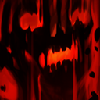
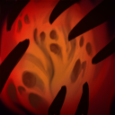

| Ловкость |
SHADOW | |
| НАНОСИТ УРОН, ВЫПУСКАЯ ИЗ СЕБЯ ДУШИ ПАВШИХ ВРАГОВ | |||
| Shadow Fiend становится сильнее с каждой полученной душой убитого им существа. Каждое убийство, каждое точное попадание опустошающими чарами приближает смертоносный удар энергии выпущенных на волю душ. |
|||
Полная историяГоворят, у Невермора душа поэта, но на самом деле у него их тысячи. Веками он поглощал души стихотворцев, священников, императоров, нищих, рабов, философов, преступников и, естественно, героев. Не скрыться от него ни душе. Никто не знает, что он с ними делает. Никто не вглядывался в Бездну, где среди астральных скал Невермор таится, словно змея. Пожирает ли он души одну за другой? Выставляет ли он их трофеями в коридорах зловещего храма? Маринует ли в чернокнижном рассоле? А может, он — лишь марионетка, которой кукловодит зловещий разум извне пространства? Таково его зло, настолько силен его тёмный дух, что разумом его не понять. А если вам всё же очень хочется разузнать, что он делает с душами, то всё просто: присоединяйтесь к его коллекции. Или просто подождите: Невермор уже идёт к вам. |
|||
| Количество здоровья | 538 |
| Количество маны | 291 |
| Атака | 47 |
| Задержка перед атакой | 1 |
| Дальность атаки | 525 |
| Скорость передвижения | 305 |
| Броня | 4 |
|  | Shadowraze |
| Герой опустошает участок земли прямо перед собой, нанося урон всем врагам в зоне действия. Накладывает на жертву складывающийся эффект, с каждым попаданием способности Shadowraze увеличивающий урон от неё и замедляющий передвижение жертвы. | |
|  | Necromastery |
| Герой крадет душу каждого убитого врага, получая бонус к атаке. После смерти выпускает 30.0% из них. | |
 |
Presence of the dark lord |
| Присутствие героя снижает броню ближайших врагов. Каждая смерть вражеского героя поблизости усиливает снижение брони на 2.0 на 20.0 сек. | |
 |
Requiem of souls |
| Герой выпускает собранные души в волнах демонической энергии. Существа возле него могут получить урон от нескольких волн. За каждую задетую волну на жертву накладывается 0.7 сек. замедления, снижения сопротивления магии и страха (но не более 2.1 сек.). Создаёт одну волну энергии за каждую душу, захваченную с помощью Necromastery. |
 Telegram
Telegram